Mobile/web data collection tool
USER GUIDE
Web interface 4
Quick overview of buttons 4
Forms[a] 6
List 7
search for questionnaires 10
Dhis mappings 11
Completeness 13
Organisation Unit 15
List 15
Creation of an organizational unit in the platform 17
Group 18
Matching 19
Configuration 19
Iaso App 23
Quick overview of buttons 23
Homepage 25
Settings 25
Refresh data 26
Start 27
Units Tab 27
Data collection 28
How to interrupt data collection? 33
Option one 33
Option two 35
Forms Tab 38
Upload 38
Finalize forms 38
Send data 38
Edit and view 39
View Sent Forms 39
Edit a saved form 39
Edit a finalized form 40
Review a Form 40
New Version 1.28 40
Iaso is a Web/Mobile application for the collection of data through mobile devices (cell phones, tablets…).
Web interface
Quick overview of buttons
|
Allows to show the main menu for the app |

| This is the view icon for to show more details about the selected element |
| The pencil icon allows to edit or modify a element |

| DHIS mapping allows to map form questions with dhis2 dataElements |
| This icon allow to hide the menu bar |

| This buttons allow to scroll-up the content of a table |
| This button allows to create a new element in the plateforme (Form, organisation unit, organisation unit group, form mapping, etc) |

| This button allows to download forms to CSV format |

| Download forms to XLSX format |
| This button allows searching for an element by many criteria (text, Organisation unit, status, etc.) |

| Allows to refresh datas |

| Allows to add a tabpanel for searching a element |

| Allows to define that a question name will not map with a dataElement |

| Validate the mapping between a selected form question with a data element Dhis2 |

| This buttons allows to filter forms send by status (ready, with error or Exported) |
To log into the web interface, go to https://iaso.bluesquare.org/login/ and sign in with the user and password.

Once in the interface, you will see the Menu button in the top left of the screen:
The menu allows you to navigate to the different windows for managing:
Forms
- List
- DHIS2 mapping
- Completeness
Organisation Units
- List
- Groups
- Organization unit type
- Matching
- List
- Algorithms run
Configuration
- Users
Forms
This view allows you to create and view forms then map to DHIS2 and get data entry completeness
List
This view allows you to view, modify or create forms.
- To view click on View button of the form
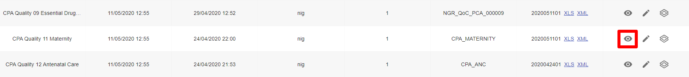
In the Form view you can see details of
· When the form has been updated
· What Organisation Unit
· For what period
· Download the file in XML
· When the form was created
This view allows you to search the Organization Unit through free text entry and several filters that can be combined.
The export button allows you to export mapped data to dhis2
You can find records for a submission
After you can see data sent and edit it on Enketo by clicking on the pencil icon
Editing form data on Enketo
You can search the results with the filters provided, and export results in CSV or XLSX.
- To modify click on the edition button of the form
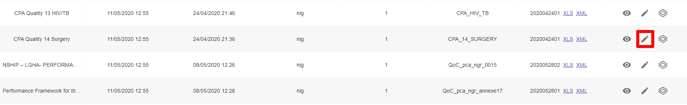
An edition window opens where you can modify the form informations
- Name
- XLSForm
- Periodicity
- Number of periods before and after
- Whether only one answer is possible or more
- Project
- Type of organization unit
- Name of field in “device”
- Name of “location” field
- Synchronise with another form

- To add a new form, click on the “create” button

A window will open allowing you to enter the information required to create a new form.
- Form name
- XLSForm
- Periodicity
- Number of periods before and after
- If only one answer is possible or more
- Project
- Type of organizational unit
- Name of the “device” field
- Name of the “location” field
And you can choose whether or not to save the changes made.
search for questionnaires
Allows you to search on the name of the organizational unit or also allows you to search on the form ID using the command line "ids:" followed by the form IDs separated by commas. This allows multiple questionnaires to be searched at once.
Example: ids: 17727, 16768, 19999, 14444
Dhis mappings
After the form is uploaded, it should be mapped to match the data item in dhis2 to make it easier to export data from Iaso. to match, use match with dhis2.
To see, click on DHIS mappings to see the forms

In the Form view you can see details of:
- Action to take
- Name of forms available for mapping
- The version
- The type of the form
- The number of questionnaire to be mapped
- Total number of questionnaires
- The mapping coverage
- Date of last modification
Click on action to take of a form and a window will open allowing you to map each questionnaire of the xls forms to the correspondent dhis2 data element

The mapping process consists of selecting a question on the left and deciding whether it should be mapped to dhis2 or not.
Some questions may not need to be mapped like notes, metadata etc. in such a case click on never map.
If the question is to be mapped, search for the correspondence DE in the box by using the name , code or ID and then confirm.
Once confirmed the question will turn to green and be counted.
Completeness
Click to view data completeness
In the Form view you can see details of:
- Buttons to select forms ready to be exported, errors and exported
- Periodicity filter
- Synchronise button
Click on each of these button to have forms ready to be exported, errors and exported. A periodicity filter is there to organise data in months, quarters, semester or yearly
Click on the  button to synchronize two forms
button to synchronize two forms
Eg: to get aggregate data from community verification survey, all the client forms should be synchronized to a single form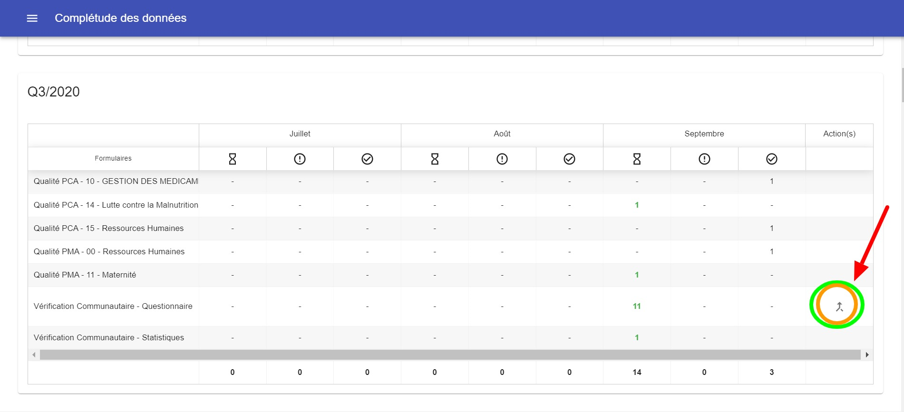
Organisation Unit
List
This view allows you to search the Organization Unit pyramid through free text entry and several filters that can be combined. 
The search results can be exported in CSV, XLSX or GPKG.
Results can be seen in a list or on a map

Several searches can be made by adding tabs to the page with the + button.
You can choose the color of the results on the map for each search. 
Creation of an organizational unit in the platform
Allows you to create an organizational unit at any level. We can therefore add a municipality, a province, etc. (Reserved for System Administrator only).
Advantage:
- Easier than creating via tablet for the administrator
- Allows you to create an organizational unit at any level and directly validate it
- Allows before creation to verify that this unit does not already exist elsewhere and therefore to move it rather than create it.
Group
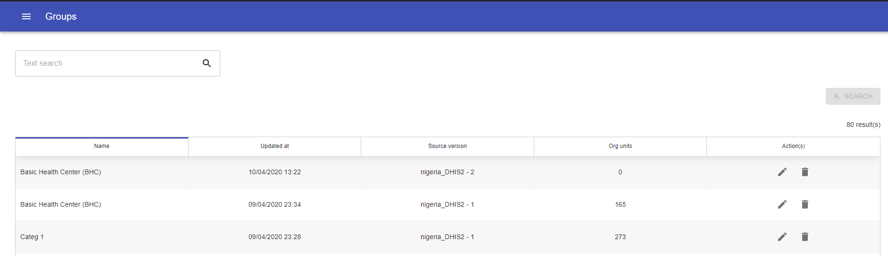
This view allows you to search the Organization Unit Groups through free text entry. Groups can be edited by clicking on the pencil icon  or deleted by clicking on the delete button or a new group can be created by clicking on the create button
or deleted by clicking on the delete button or a new group can be created by clicking on the create button
Matching
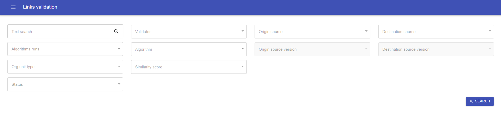
This part is for the "management of the pyramid".
This is rather a "HFR" functionality : to have several pyramid sources and try to make links (like where in a csv “province x” is called "PROVINCE X" and in another source it is called "DPS X").

The algorithms run part is intended for data science work within the framework of Bluesquare's data science platform.
Configuration
This view allows you to manage users. You can search a user through free text entry.
In the view you can see details of:
- Users names
- First name
- Name
- Email address
- Action(s)
- Free text search

Click on edit under actions(s) to update users role
Click on +CREATE to add a new user. Fill in the details and define permission level

You can modify info and permissions for a user by clicking on the pencil icon .
You can change the app language by clicking on the language version menu.
Also you disconnect from the app, by clicking on the “logout” button.
Downloading CCSS Sampled Clients
To get the list of samples, log into Iaso web app. On the list of forms, find the Customer Verification Sampling Form, click the View icon against the form to open the submission list. Use the available search parameters to filter the list of clients you want e.g. filter by period and organisation unit (See screenshot below).
After filling in filters, click on Search to get the desired list. Click on the blue XLSX button to download the data in Excel format. In this Excel spreadsheet you can select the information you need to send to the verifiers that will carry out the Client Surveys.
Downloading CCSS Clients Surveys
To download the Client Survey data for concordance check, follow the process described above for sampled clients on the Customer Verification Survey Form.
Iaso App
Bluesquare instantiates a Iaso app for each project, and these are available through the PlayStore (https://play.google.com/).
Once you have downloaded the appropriate app, you will be able to complete the available forms.
Quick overview of buttons
| The left arrow button in the top left corner you can navigate back to other levels in the pyramid. |
| The House icon button brings you directly back to the homepage, you will see a list of all the forms you have filled out, and can filter them by total, unfinished, finalized, uploaded. |
| The filter icon button allows you to view only a selection of Organization units depending on the type. If this is not set up the only option available is to see the whole health pyramid. |
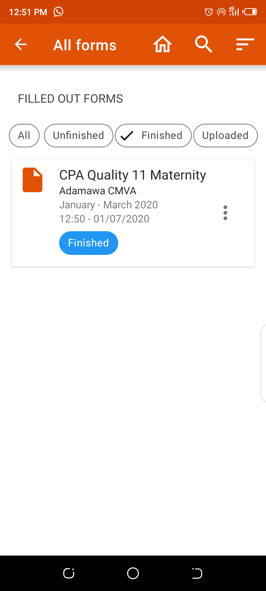
| The sort button allows you to sort the forms by name, period, or encoding date |
| The Skip button allows you to navigate to the beginning or end of the form. |
| Save button allows you to save the data collected so far. |
| Upload button allows you to upload data to the server. Only finalized forms will be uploaded. |
| Orange Menu button allows you to refresh the app data and view app details |
| White Menu button allows you to edit a form that has already been started. |
| Start button allows you to start collecting data. |
| Fill out form button allows you to select the form needed for the organization unit you are collecting data for. |
Homepage
On the homepage are listed the forms that have been accessed, either completed, finalized… In the case of the first use, this page will be blank and all filters will show “0”.
- Settings
- Start
- Filled out forms
- Upload forms
Settings
Next to the upload button is a menu button that gives access to “Refresh data”, “Available Forms” and “About”.
Go to settings by clicking the 3 dots on the upper right corner of the screen homepage
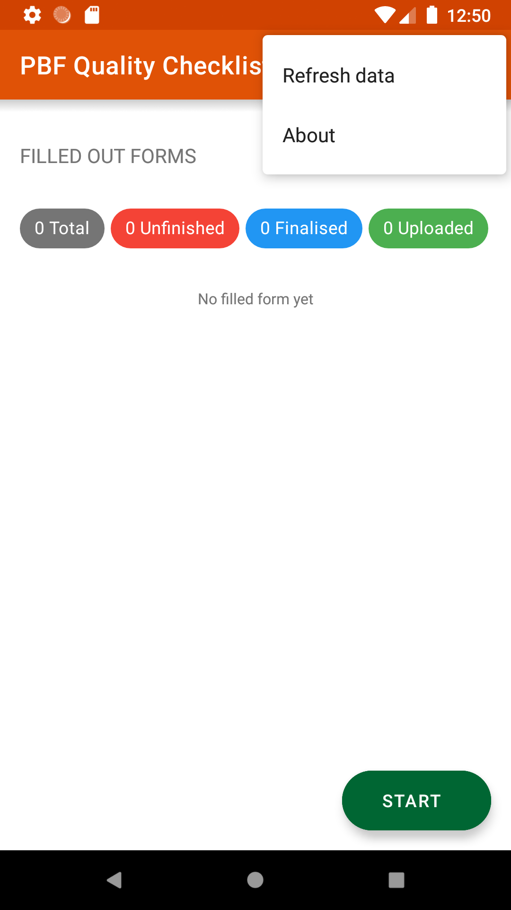
Refresh data
Click Refresh data to refresh the health pyramid, the available forms or both.
Choose what you want to refresh to retrieve the last available data from the server. You need to have access to the internet for this to work. This may take a few minutes.
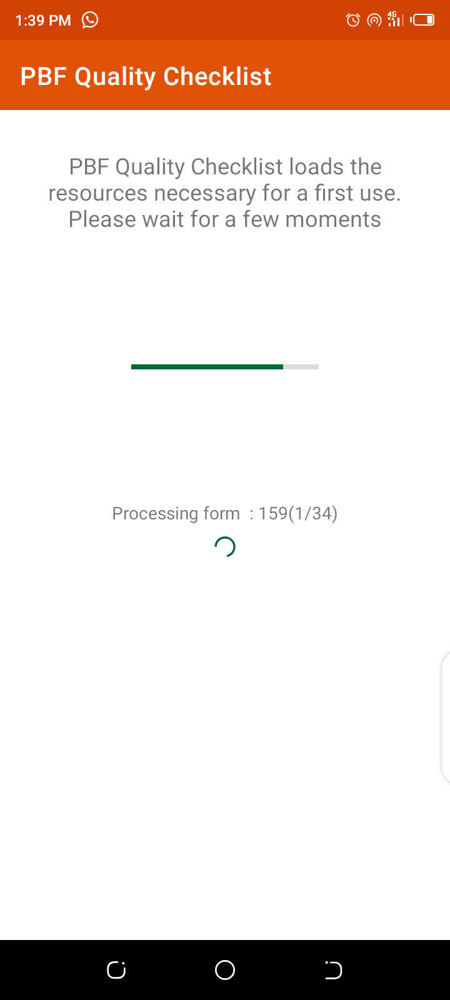
Start
From the main menu, tap on « Start» to get to the health structure and start data entry.
Units Tab
In the “UNITS” tab you can navigate through the health pyramid to the organization unit you are collecting for. The health pyramid structure can differ from one country to the next. The button “Fill out a form” will appear at applicable levels. For each level a small indicator tells you how many Organization Units exist in the level you are viewing.
Simply click on the pyramid level you are interested in and sub-levels will appear.
Data collection
When you have selected the desired Organization Unit, click on the “Fill out a form”.
You will need to select from the list of available forms (if there are more than one in the app).
You will then be prompted to select the period you are collecting for.
A confirmation message will allow you to to check you have selected the correct organization unit, form and period. Click on “Proceed” if it is correct, and on “Cancel” if you need to change a parameter.
Once you have selected the correct parameters go on to filling out the form. Questions with a star (*) are mandatory. 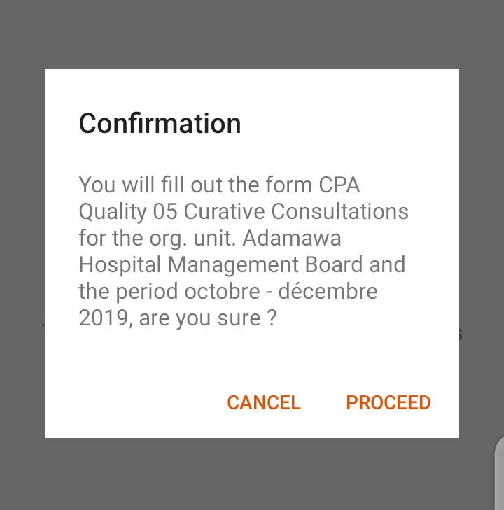
Some forms will ask you to “Get geographical coordinates”. To do this, click on the “Get coordinates” button, wait for the coordinates to be as precise as possible (this may take a few minutes) and then click on “Save the coordinates”. 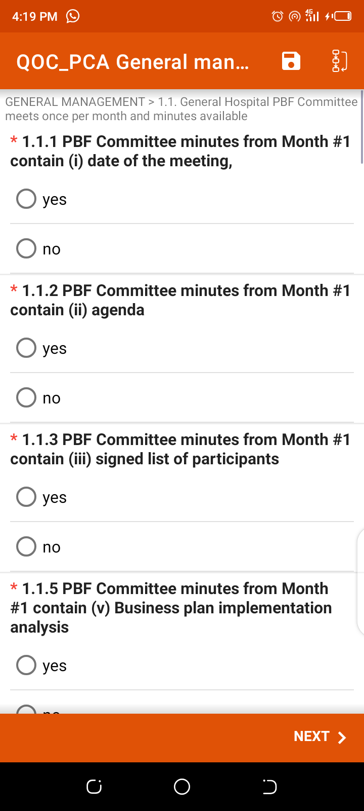
At the end of a form you may encounter a summary page where you can view the points obtained for each question or section.
When you get to the end, you can choose to “Mark the form as finalized” or not by checking the box. Then click on “Save and Exit”. At the end of the form, if you want to be able to review and correct the form, DON’T mark it as finalized.
You can give a name to the form to make it easier to find it later - NOTE - this is only for personal use to find the form. The name will not be sent to the data management system.
The form will be saved and available from the main menu under « Unfinished ».
How to interrupt data collection?
Option one
Tap on the three boxes with arrows in the top right corner of the screen
Then Tap on « Go to end »
Save the Form
You can give a name to the form to make it easier to find it later - NOTE - This is only for personal use to find the form. The name will not be sent to the data management system
The form will be saved and available from the main menu under “Unfinished” or “Finalized”.
You are then directed to the screen showing the forms you have filled in for the Organization Unit you are working on.
Option two
If you want to leave the form, click on the arrow at the bottom of your device. You will be asked if you wish to save the changes or not. Again, you can choose to save the form.
If you want to leave the form without saving this is the way to do it. Simply click on “Ignore changes” and you will leave the form. However if the form was previously saved only the changes since the last save will not be saved.
If there are many forms and you are looking for a specific one you can click on the search button and type in the name of the form.
If you click on the three dots on the right of a form, you can change the Period or the Organization Unit.
If you click on a form in this list you can view it. If you click on a question in a form you can edit the answer. You can choose to save changes or not when exiting the form. And at any point you can click on the “Save the Form” button, your changes will be saved and you will return to the Organization Unit page.
Forms Tab
In the “FORMS” tab you can see the list of forms that have been filled in for the organization unit you have navigated to in the “UNITS” tab. If you have not started collecting data for the organization unit yet, there will be no forms in the “FORMS” tab.
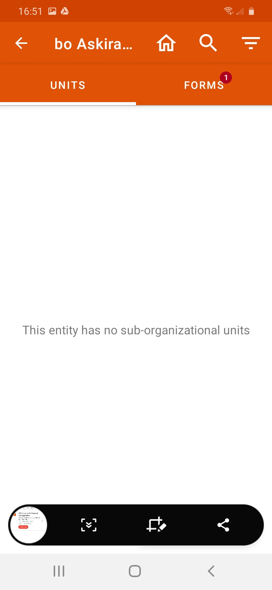
Upload
Once you have collected the data, the forms need to be uploaded to the server so the data can be used in the system. In order to do so, you will need to have access to the internet.
Finalize forms
- To submit a Form your first need to finalize it
- Click on “Unfinished” on the homepage
- Open the Form you want to finalize
- Review the form until the end
- If the data is correct, tick the box « Mark Form as Finalized »
- The Form will be available from the main menu under « Finalized »
Send data
- Once data entry is complete, connect your tablet or phone to wifi or turn mobile data on
- Tap on «upload» cloud button
You will be prompted to confirm the forms upload.
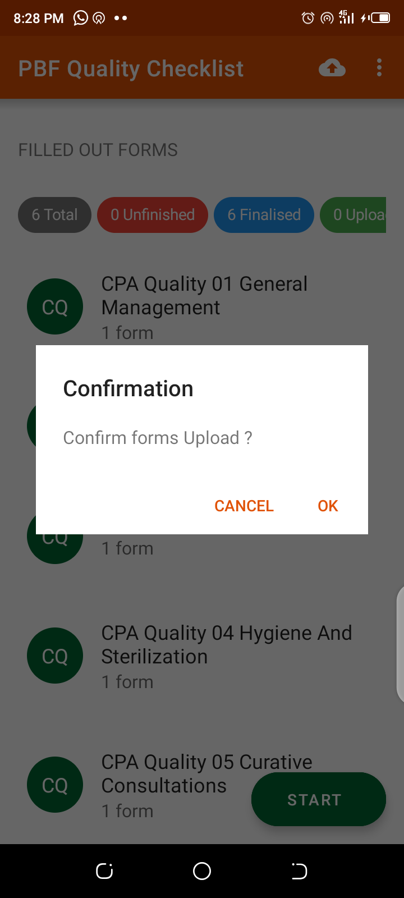
Note that only the forms that have been finalized will be uploaded to the server.
- All the finalised forms will be sent to the server
- You can view all Sent forms from on the homepage under « Uploaded ».
Edit and view
View Sent Forms
From the main menu, go to « Uploaded »
You can see the name of the forms, day and time they were sent
Edit a saved form
- Tap on “Unfinished” on the homepage
- Select the Form
- Tap on “Go to Start”
- Start re-entering data until you reach the end of the Form
- At the end of the form, if you want to be able to review and correct the form, DONT mark it as finalized
- You can give a name to the form to make it easier to find it later
- The form will be saved and available from the main menu under « Unfinished»
Edit a finalized form
- Tap on “Finalized” on the homepage
- Select the Form
- Tap on « Go to Start »
- Start re-entering data until you reach the end of the form
- At the end of the form, if you want to be able to review and correct the form, DONT mark it as finalized.
- You can give a name to the form to make it easier to find it later
- The form will be saved and available from the main menu under « Unfinished»
Review a Form
- Tap on “Finalized” on the homepage
- Select the Form
- Scroll down to review data you have entered
- If you need to modify data, tap on « Go To Start » and swap screens until you reach the data you want to modify
- At the end of the form, if you want to be able to review and correct the form, DONT mark it as finalized.
- You can give a name to the form to make it easier to find it later
- The form will be saved and available from the main menu under « Unfinished»
New Version 1.28
Better sending of forms in case of very weak and / or intermittent network.
For devices that have unsent forms, we've added a "forced download" feature. To access it, you must activate "developer mode" by tapping 10 times on the application icon under the "about" menu (under the three dots) and then "Force resend all forms" will appear in the menu . This option is not available by default to avoid re-sending data already correctly sent, which will overwrite those already sent (and which could therefore have been modified by an administrator in the meantime).
[a]@lpontis@bluesquarehub.com in forms they have a new functionality named DASHBOARD that must be explain and ARCHIVE also
_Assigned to Laure Pontis_